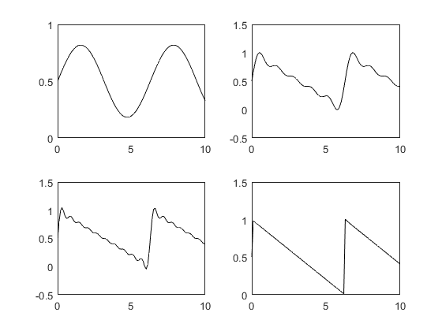
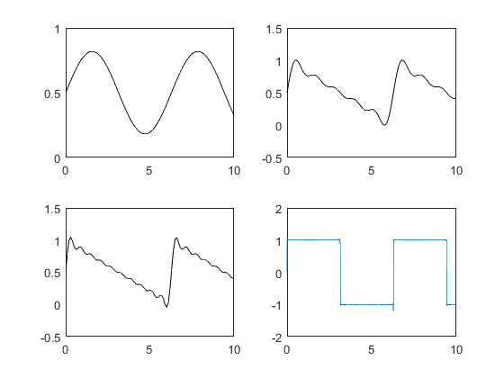

Contents
t = [0:.1:10];
y = 0.5 + sin(t)/pi;
subplot(2,2,1),plot(t,y,'k')
y = 0.5;
for m = 1:5;
y = y + sin(m*t)/(m*pi);
end;
subplot(2,2,2),plot(t,y,'k')
y = 0.5;
for m = 1:10;
y = y + sin(m*t)/(m*pi);
end;
subplot(2,2,3),plot(t,y,'k')
y = 0.5;
for m = 1:1000;
y = y + sin(m*t)/(m*pi);
end;
subplot(2,2,4),plot(t,y,'k')

2
T = 2 * pi;
A = 2;
ao = 0;
wo = 2*pi/T;
tf = 10;
dt = tf/1000;
t=0:dt:tf;
f=ao*ones(size(t));
num_harm=1000;
for n=1:2:num_harm
bn = ((2*A)/(pi*n));
f = f + bn * sin(n*wo*t);
end
plot(t,f)
